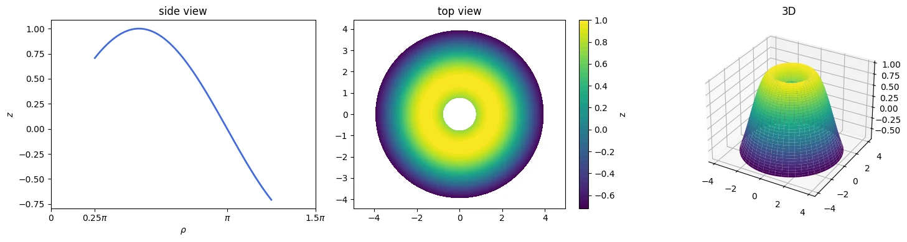
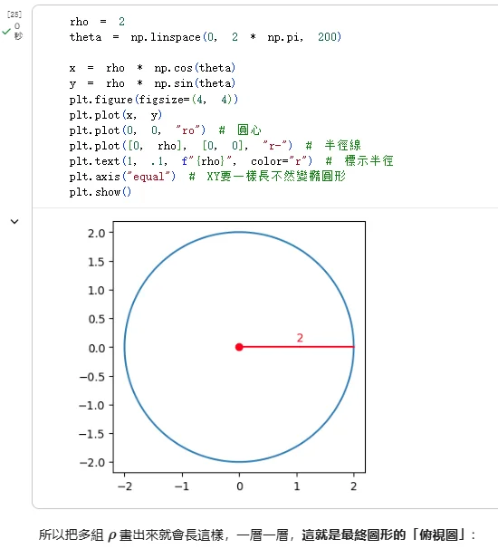
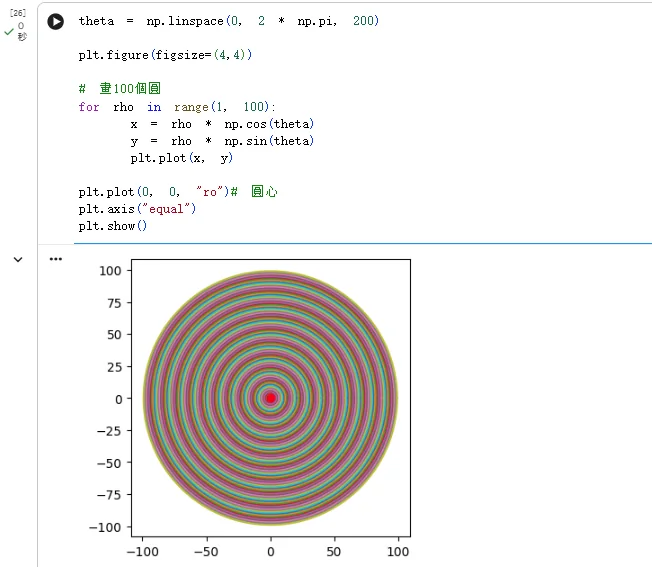
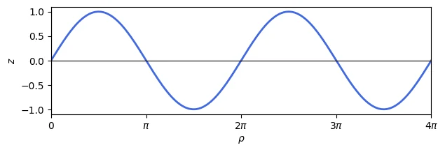
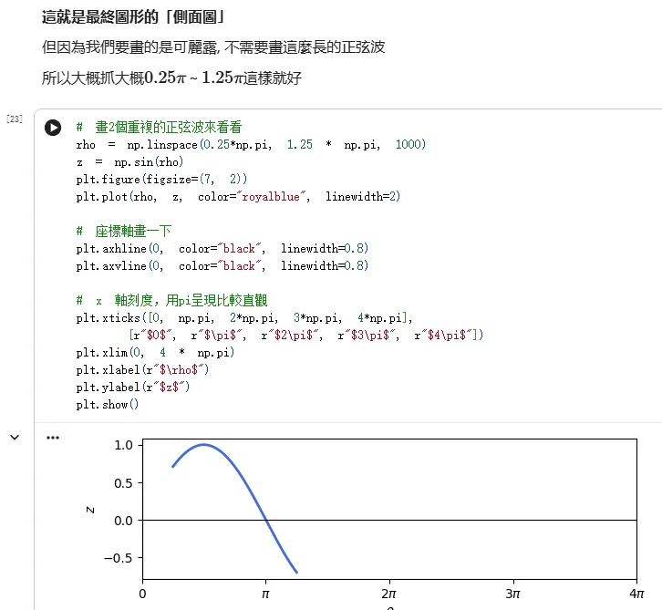

用 AI 畫出一顆「可麗露」
第一份作業是「在 Colab 畫一個函數圖形」。我沒有靈感，也不太會寫程式，所以先請 AI 幫我想點子，再把它給的程式一步一步拆開，直到真的看懂為止。

想解決的問題
作業要畫一個「有創意」的函數圖形，但我完全沒靈感，也看不懂太複雜的程式。
AI 怎麼幫忙
先請 AI 產生很多種圖形給我挑；選定之後，再請它幫我把公式和程式拆成小步驟。
成果
選了 z = sin(√(x² + y²))，看懂「把一條波浪繞一圈」的原理，畫出可麗露形狀的 3D 圖。
01過程
-
請 AI 給點子，挑一個自己喜歡的
老師說可以用生成式 AI 協助，所以我請 AI 產生很多不同的函數圖形：螺旋狀、小花狀、愛心狀，還有看起來很複雜的圖。
看了很多張之後，我發現 z = sin(√(x² + y²)) 畫出來很像我喜歡的法式甜點「可麗露」，就決定選它。
-
AI 給的程式看不懂，那就拆開來
AI 給的程式又長又雜，我幾乎看不懂。為了寫出作業過程，我把公式拆成兩個步驟：
- 俯視圖：先算出平面上每一點到中心的距離 ρ = √(x² + y²)
- 側面圖：再用這個距離算出高度 z = sin(ρ)
-
先畫一個圓，搞懂「距離」
我先試著只畫 ρ = 2：從中心出發、距離永遠是 2，一邊轉方向一邊點出來，連起來就是一個圓。畫很多個不同大小的圓疊在一起，就是最後圖形的「俯視圖」。

先畫距離中心都是 2 的點 
一層一層畫出來，就是俯視圖 -
把距離丟進 sin，得到一條波浪
z = sin(ρ) 就是普通的正弦波，只是橫軸換成「離中心的距離」。可麗露不需要那麼長的波，所以我只取 0.25π 到 1.25π 這一小段，剛好是一個隆起再往下的形狀。

完整的正弦波，每隔 2π 重複一次 
只留下一小段，這就是可麗露的「側面圖」 -
恍然大悟：把側面繞一圈就是可麗露
一直到側面圖畫出來，我才恍然大悟：把這條波浪繞著中心轉一圈，就是可麗露！最後把兩個步驟合起來，畫出 3D 圖形。
02成果
作業用 Google Colab 完成，裡面有每一步的程式、圖和文字說明：
03我的心得
這次作業讓我發現，AI 的確可以很快給我很多靈感和現成的程式碼，但如果完全不研究，我其實不會知道自己交出去的是什麼。
我本來以為只要從很多圖片中挑一張喜歡的，大概理解一下就好；結果 AI 給的東西又長又雜，我幾乎看不懂。後來為了寫出作業過程，只好一步一步了解公式、拆分步驟，直到畫出側面圖才終於懂了。
雖然我現在還沒辦法不看 AI 範例就自己寫出整段程式，但至少知道：在 AI 的協助下，我可以清楚理解每一段在做什麼，也能照自己的思路重新組合程式。
💼 帶回工作用
這一堂可以套用到工作上的地方：
- 沒靈感時，請 AI 一次給很多選項例如簡報主題、標語、報告架構，先請 AI 列出 10 個，自己挑最有感覺的，比從零開始想快很多。
- 交出去之前，自己要先看得懂AI 給的報告、公式或程式，如果被問到「這是什麼意思」答不出來，就還不能用。
- 看不懂就請 AI 拆成小步驟不用硬吞一大段，請 AI 一步一步解釋，每一步都做出來確認，就會越來越清楚。